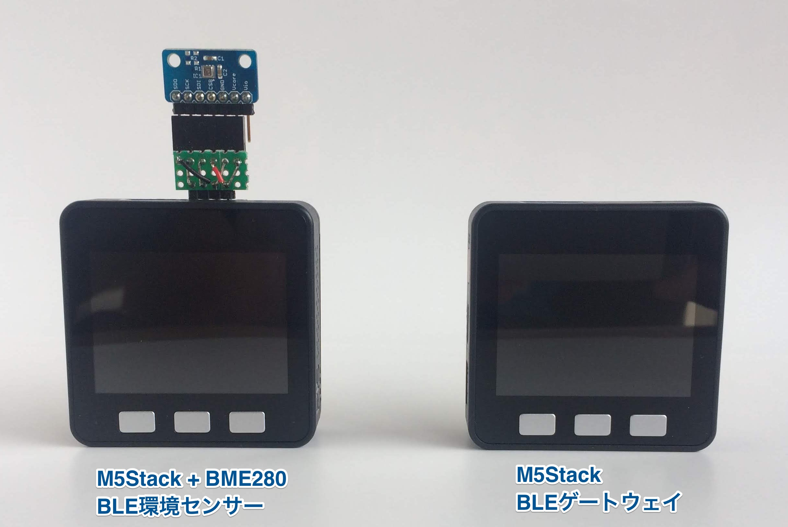
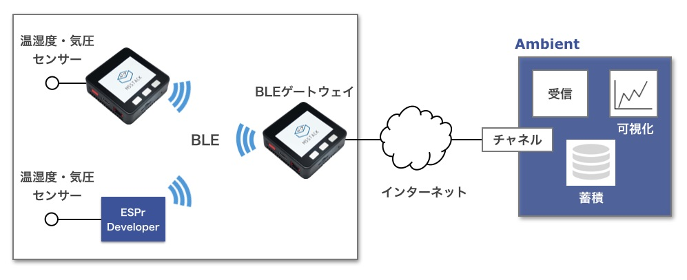

ESP32はWi-FiとBluetooth Low Energy (BLE)通信機能を持っています。 この機能を使い、BLEセンサ端末からデータを受けて、クラウドに送信するBLEゲートウェイを作ります。
BLE環境センサ端末は「M5StackでBLE環境センサ端末を作る」を、 Raspberry Piを使ったゲートウェイは「BLE環境センサ・ゲートウェイ(Raspberry Pi編)」をご覧ください。


センサ端末とBLEゲートウェイの両方をM5Stackで作ります。 ゲートウェイはセンサ端末からBLEでデータを受け、Wi-Fi経由でクラウド(Ambient)に送信します。
#includevoid setup() { } void loop() { }
ほぼ何もしないプログラムをビルドすると、次のようなメッセージが表示されます。
最大1310720バイトのフラッシュメモリのうち、スケッチが264500バイト（20%）を使っています。 最大327680バイトのRAMのうち、グローバル変数が15184バイト（4%）を使っていて、ローカル変数で312496バイト使うことができます。
Arduino Coreは1.0.0-rc4を使っています。258kバイトがArduino Coreのサイズのようです。 これにBLEDevice::init()だけを追加してビルドしてみます。
#include#include "BLEDevice.h" void setup() { BLEDevice::init(""); } void loop() { }
最大1310720バイトのフラッシュメモリのうち、スケッチが1152833バイト（87%）を使っています。 最大327680バイトのRAMのうち、グローバル変数が59068バイト（18%）を使っていて、ローカル変数で268612バイト使うことができます。
プログラムサイズが約1Mバイトになってしまいました。増えた分の約867kバイトがBLEモジュールのサイズのようです。 さらにWiFi.begin()を足してみます。
#include#include "BLEDevice.h" #include void setup() { BLEDevice::init(""); WiFi.begin("",""); } void loop() { }
最大1310720バイトのフラッシュメモリのうち、スケッチが1437438バイト（109%）を使っています。 最大327680バイトのRAMのうち、グローバル変数が79416バイト（24%）を使っていて、ローカル変数で248264バイト使うことができます。 スケッチが大きすぎます。http://www.arduino.cc/en/Guide/Troubleshooting#size には、小さくするコツが書いてあります。 ボードM5Stack-Core-ESP32に対するコンパイル時にエラーが発生しました。
プログラムが100%を超えてビルドできなくなりました。
Arduinoはネットワーク経由でプログラムを更新するOTA(Over the Air)機能のために、デフォルトではメモリに同サイズの二つのプログラム領域を確保します。 この2領域をまとめて使うことで、OTA機能をあきらめて、プログラム領域を拡大できます。 設定ファイルを変更するので、変更を元に戻せばOTA機能は使えるようになります。
デフォルトのメモリマップは次のファイルに書かれています。
# Name, Type, SubType, Offset, Size, Flags nvs, data, nvs, 0x9000, 0x5000, otadata, data, ota, 0xe000, 0x2000, app0, app, ota_0, 0x10000, 0x140000, app1, app, ota_1, 0x150000, 0x140000, eeprom, data, 0x99, 0x290000, 0x1000, spiffs, data, spiffs, 0x291000, 0x16F000,
app0とapp1が同サイズの二つのプログラム領域です。これを次のように編集します。
# Name, Type, SubType, Offset, Size, Flags nvs, data, nvs, 0x9000, 0x5000, otadata, data, ota, 0xe000, 0x2000, app0, app, ota_0, 0x10000, 0x340000, eeprom, data, 0x99, 0x350000, 0x1000, spiffs, data, spiffs, 0x351000, 0xAF000,
さらにボードの定義ファイルboards.txt中の
esp32.upload.maximum_size=1310720 m5stack-core-esp32.upload.maximum_size=1310720
の2行を次のように変更します。
esp32.upload.maximum_size=3407872 m5stack-core-esp32.upload.maximum_size=3407872
boards.txtは次の場所にあります。
これで先程のBLEDevice::init()とWiFi.begin()を実行するプログラムをビルドします。
最大3407872バイトのフラッシュメモリのうち、スケッチが1437438バイト（42%）を使っています。 最大327680バイトのRAMのうち、グローバル変数が79416バイト（24%）を使っていて、ローカル変数で248264バイト使うことができます。
プログラム領域が1.25Mバイトから3.25Mバイトに拡張され、ビルドできるようになりました。
比較的プログラムが単純なブロードキャストモードのゲートウェイを作ります。
ブロードキャストモードのBLEセンサ端末は、センサデータを次のような形式でアドバタイジングデータに載せて発信します。

BLEゲートウェイはBLEをスキャンしてアドバタイジングパケットを受信し、 AD TypeがManufacturer dataで、次のカンパニーIDが0xffffのデータを探します。 見つけたらその中から温度、湿度、気圧データを取り出し、Ambientに送信します。
アドバタイジングデータの中には送信するごとに1ずつ増加するシーケンス番号が入っており、 同じデータを重複して送信しないようにしています。
setup()関数は次のようになります。BLE、WiFi、Ambientの初期化をおこなっています。
loop()関数では、BLEをスキャンして、スキャンデータから対象の端末を探し、 見つかったら、スキャンデータからセンサデータを取り出し、Ambientに送ります。
プログラム全体はGithubに置きました。
BLEゲートウェイは常にスキャンをおこない、対象のデバイスからのデータがあれば、それを受けてデータをクラウドに送信します。 BLEセンサ端末が例えば5分に1回温度、湿度、気圧などを測定し、10〜20秒程度BLEでデータをブロードキャストすると、 BLEゲートウェイがそれを受信してクラウドに送ります。
この記事はアンビエントデーターの下島が担当しました。